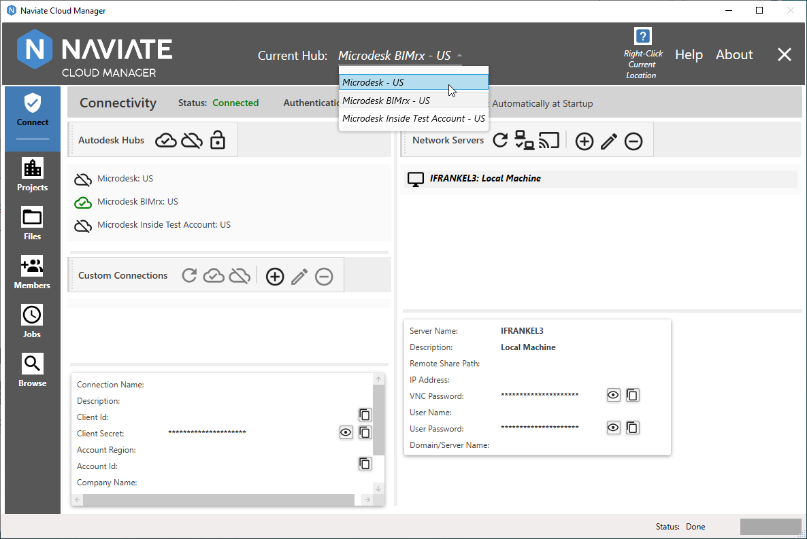

Autodesk® Connection
The first time Naviate Cloud Manager is run, after license entry, the following screen is displayed:
Please Note — The following screens depict using the application under a Professional license. For more regarding the difference between Standard and Professional licenses, see License Information.
After entering the same Autodesk® login email address normally used to access Autodesk® BIM 360®, pressing Next brings up the following screen.
Once the customary Autodesk® BIM 360® password has been entered and the Sign In button pressed, the following informational screen appears.
Finally, pressing the Allow button, completes the login process.
While successfully logged in, the user still doesn't have a valid Naviate Cloud Manager Autodesk® Connection, as indicated by the Status shown below:
Please note that while all valid Hubs for the current connection are displayed, they all have the icon, which indicates not connected. Also, The Current Hub at the top of the screen is blank. Additionally, also note that access to all other modules on the left side of the screen is disabled, pending connection.
To connect to one of these Hubs, simply select one and press the Connect button, as shown above.
Once connected, notice the changes to the screen appearance and functionality, as shown below.
The Status now clearly displays the Status. The connected Hub is clearly indicated in the Hub list by the icon, and by the Current Hub display at the top of the screen. Finally, the main menu is now enabled, allowing the user to navigate wherever they like in the application.
Once connected to one Hub, select any other Hub and press the Connect button:
This will automatically disconnect from the current Hub and to connect to the new one, as shown below.
Tip — Double click on an Autodesk® Hub in the list to disconnect from the current Hub and connect to the one being double-clicked on.
Another method of changing Hubs is to use the dropdown list at the top of the screen:

Simply select the desired Hub from the dropdown list as shown above. This automatically disconnects from the current Hub and connects to the selected Hub, to produce the result shown below.
The advantage of this method is that the Current Hub dropdown list is available from all modules in the system. This means that while viewing projects in the Browse module, for example, the user can switch to a different Hub without having to leave the Browse module.
Tip — Use the Current Hub dropdown list to change the currently selected Hub while located in any module in the system — without having to navigate back to the Connect module.
To disconnect from the current Hub without connecting to a new one, simply click on the Disconnect button, producing the following result:
Finally, it is also possible to fully disconnect from the current Autodesk® login. Pressing the Logout button produces the following dialog:
Answer Yes and the user who is currently logged on via an Autodesk® Connection is logged out.
This allows the user to logon with a different Autodesk® login when necessary or desirable. From here they are also free to establish a Custom Connection.